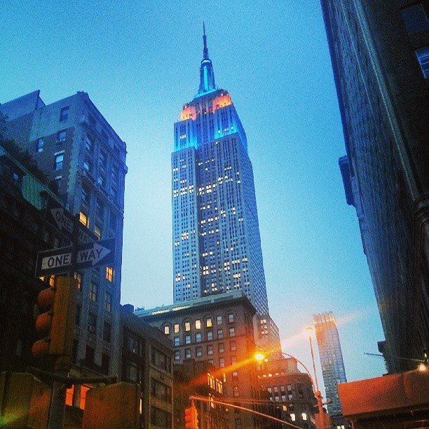
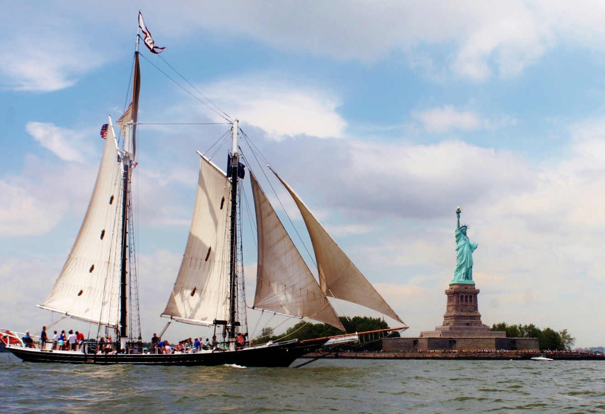
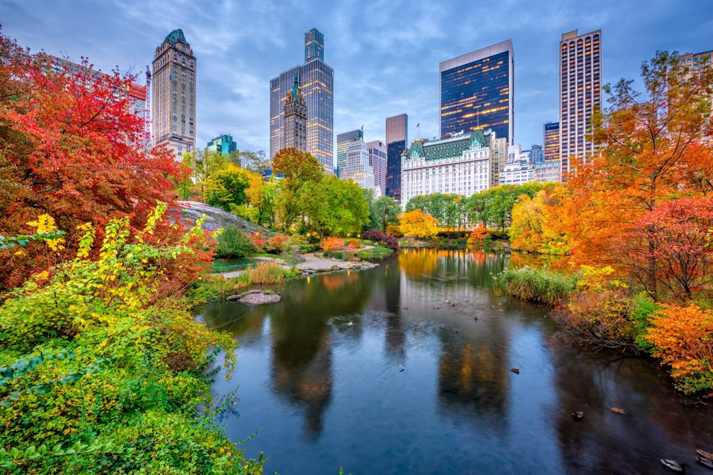
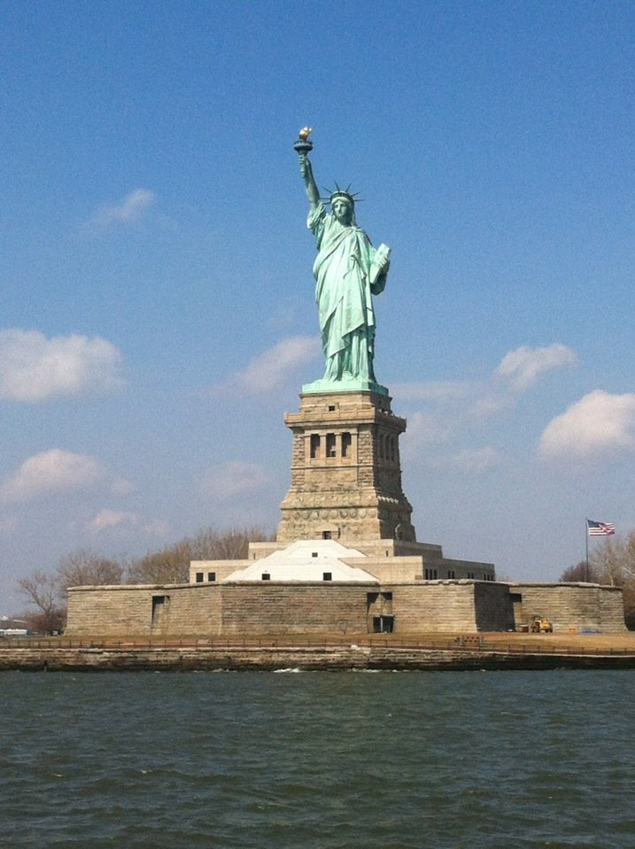
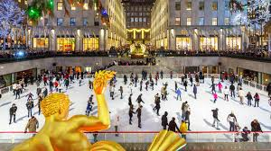

Sightseeing

Empire State Building
"If you want to see Manhattan and I mean the whole thing the 86th floor of the empire is perfect for you."

South Street Seaport
"South Street Seaport offers some great shopping options with beautiful views of the Brooklyn Bridge. Come here early and watch the boats dock for the day."

Central Park
"Be sure to do a carriage ride, very relaxing, educational and scenic."

Statue of Liberty
"It was a gift from France to the people of the US marking the centennial in 1886. Lady Liberty sits on Liberty Island at the entrance of the Hudson River."
Time Square
"Over a million people annually flock to Times Square to greet the New Year. The legendary ball-drop is held since 1907."

Rockefeller Center
"We enjoyed 360 degree view of the city from the observation deck!"
Govenors Island
"Great place to get away from the city for a day! Lots to do, including: art exhibits, biking, hammocks, picnics, food trucks, views of the Freedom Tower, Statue of Liberty and much more."
Central Park Zoo
"Loved seeing the snow leopard and the birds in the tropical section."